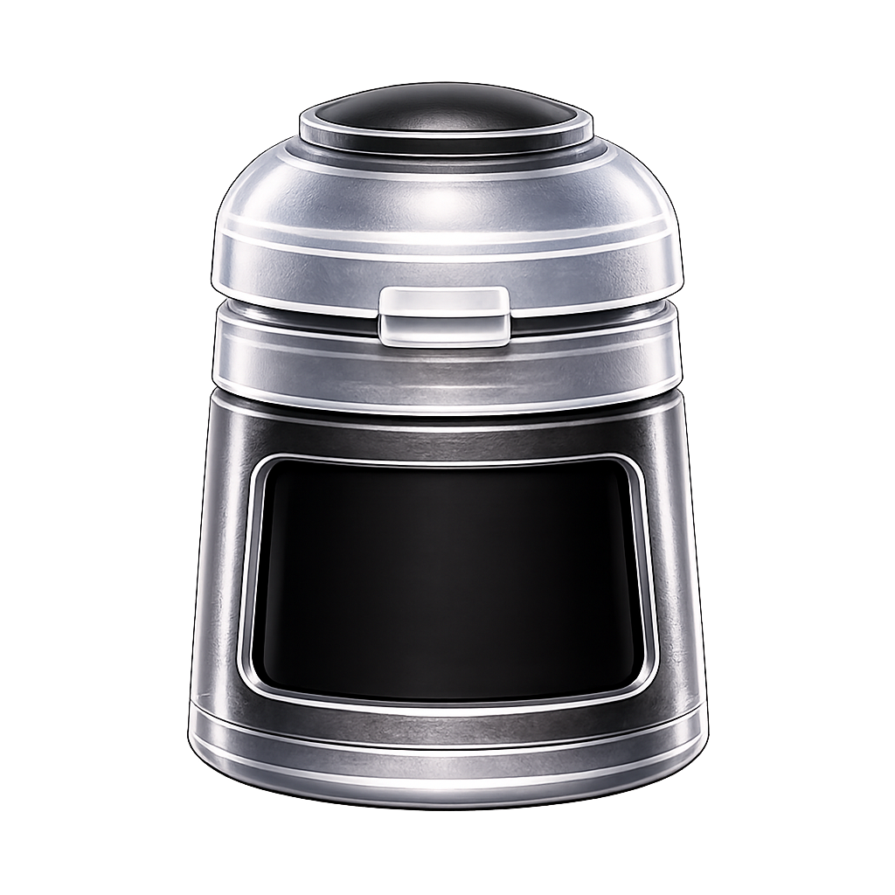

Base Paints

Build a strong foundation of color for your miniatures.
Layer Paints
Add color and highlights over your base coats.
Shade Paints
Add depth and shading to the details of your miniatures.
Technical Paints
Add texture and special effects to finish your miniatures.